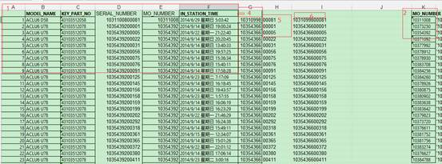
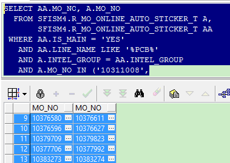
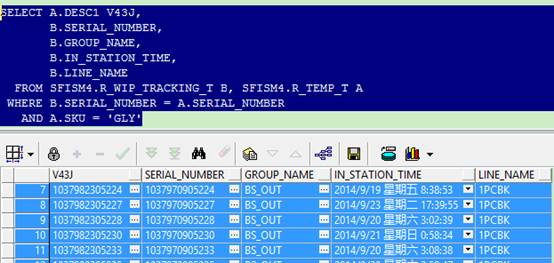
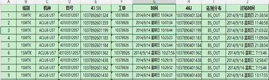

需求(条件):
1) 1SMTK线, 2)ACLU6机种, 3) 9/14 08:00 ~ 9/23 20:00 4) 经过ATE
WaitConfirm. 满足上述条件的43J SN, 及对应的45J SN 当前分布. 即站别信息.
查询步骤:
分析用表： 1)
表1: SFISM4.R_WIP_TRACKING_T. SN制程表
2) 表2: SFISM4.R_WIP_LOG_T
Log信息表
3) 表3:
SFISM4.R_MO_ONLINE_AUTO_STICKER_T 工单Group信息表
4) 表4:
SFISM4.R_TEMP_T 临时表
5) 表5:
SFISM4.R_WIP_KEYPARTS_T 半成品信息表.
作业难点: 大量43J
对应46J 信息获取后信息查询, 关系建立.
作业步骤:
Step
1: 条件3和4 去表2中得到对应时间所有WaitConfirm SN信息后与表1进行连接, 代入条件1和2进行筛选. 结果: 满足条件的43J SN及对应线别, 机种, 料号, 工单, WaitConfirm时间信息.
对应SQL
:
SELECT A.LINE_NAME,
A.MODEL_NAME,
A.KEY_PART_NO,
A.SERIAL_NUMBER,
A.MO_NUMBER,
B.IN_STATION_TIME
FROM SFISM4.R_WIP_TRACKING_T A,
(SELECT AA.SERIAL_NUMBER, AA.IN_STATION_TIME
FROM SFISM4.R_WIP_LOG_T AA
WHERE LENGTH(AA.GROUP_NAME)
> 6
AND AA.IN_STATION_TIME BETWEEN
TO_DATE('201409140800', 'yyyyMMddHH24MI') AND
TO_DATE('201409232000', 'yyyyMMddHH24MI')
AND AA.GROUP_NAME = 'ATE-WaitConfirm') B
WHERE
A.SERIAL_NUMBER = B.SERIAL_NUMBER
AND A.MODEL_NAME LIKE 'ACLU6%'
AND A.LINE_NAME = '1SMTK'
Step
2: 验证Step 1中SN中结果与表5 连接, 判定有无43,46 Link记录. 此处验证无.
背景说明: 该表1) 旧流程及当前非Laser使用Input
Link 43,45J. 则该表有对应记录. 2) 当前Laser
重整工单会将重整SN 插入记录. 即Link信息, 优先判定该表. 此处无, 详细SQL 略.
Step
3: 导出Step 1中数据进入Excel.

图
1
如图, 1中区域即初始结果.
a) 复制列E至K列, 进行重复性删除后, 留下不重复Mo信息.
b) 工单信息与表3连接, 得到43-45J 工单Link信息.
对应显示:

图
2
c) 导出结果. 即步骤3.
图
3
d) 使用VLOOKUP(E2,Sheet1!B:C,2,FALSE)
等函数产生图1中步骤4显示列. 对SN进行截取与联接
分别产生步骤5和6. 至此, 45 J SN产生, 并与43J 对应.
Step 4: 45J SN信息借助表4, 查询信息.
wiz://open_attachment?guid=b0142e9f-6944-4887-8014-6ba6267ae95c
图
4
Step 5: 最终资料获取.
导出图1和图4所示表格, 相关列 VLOOKUP, 最终资料产生.

图
5